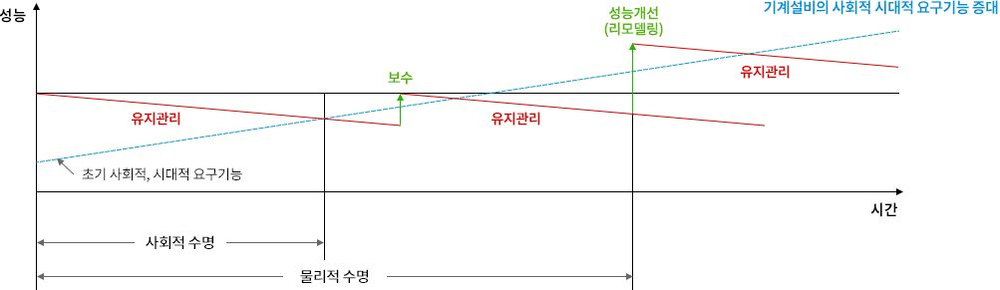

기계설비성능 점검업
건축물 기계설비의 성능 확보와 효율적 관리를 위하여 기계설비를 점검 및 진단하는 업무입니다.
기계설비 유지관리기준
일정 규모 이상 건축물 등에 설치된 기계설비의 소유자 또는 관리자는 기계설비 유지관리기준을 준수하여야 하며, 유지관리에 필요한 성능을 점검하고 점검기록을 작성하여야 합니다.

건축주는 기계설비 유지관리를 위한 점검을 의무적으로 이행해야 합니다. 신·증축 건축물, 기존 건축물에선 기계설비 유지관리자를 선임·배치하거나 기계설비 성능점검업 등록업체에 점검관리 업무를 위탁해 시행해야 합니다.
기계설비성능점검업의 등록 요건 (제17조 제1항 관련)
- 자본금 : 1억 이상일 것
- 기술인력 : 특급 책임기계설비유지관리자 1명, 고급 이상인 책임기계설비유지관리자 1명, 중급 이상인 책임기계설비유지관리자 2명
- 장비 : 적외선 열화상카메라 외 20종
기계설비법 내 해당되는 기계설비의 범위
- 열원설비 : 에너지를 이용해 열매체를 가열, 냉각하기 위해 설치된 기계·기구·배관 및 그 밖에 성능을 유지하기 위한 설비
- 냉난방설비 : 일정한 실내온도 유지를 위해 설치된 설비
- 공기조화·공기청정·환기설비 : 온도, 습도, 청정도, 기류 등을 조절하기 위해 설치된 설비
- 오수정화·물재이용설비 : 오수를 정화해 배출하거나 정화된 물을 재이용하기 위해 설치된 설비
- 위생기구·급수·급탕·오배수·통기설비 : 위생과 냉수·온수 공급, 오배수, 통기 등을 위하여 설치된 설비
- 우수배수설비 : 빗물을 외부로 배출하기 위하여 설치된 설비
- 덕트 설비 : 풍량 등을 조절하고 급기·배기 및 환기 등을 위해 설치된 설비
- 보온설비 : 보온, 보냉, 결로 및 동결 방지 등을 위하여 설치된 설비
- 자동제어설비 : 감시, 제어·관리 및 통제 등을 위하여 설치된 설비
- 방음·방진·내진설비 : 소음, 진동, 전도 및 탈락 등을 방지하기 위해 설치된 설비
- 플랜트 설비 : 생산물의 제조·생산·이송 및 저장이나 오염물질의 제거 및 저장 등을 위해 설치된 설비
- 특수설비 : 냉동·냉장, 항온·항습, 특수청정, 생활폐기물 집하 및 이송, 전자파 차단 등을 위해 설치된 설비 (청정실, 자동창고, 집진기, 무대기계장치, 기송관 등)
기계설비 공사업
기계설비공사업은 건축물·플랜트 그밖의 공작물에 급배수, 위생, 냉난방, 공기조화, 기계기구·배관설비 등을 조립, 설치하는 공사입니다.
기계설비 공사업 영업범위
건축물 등 시설물에 설치하는 급배수·환기·공기조화·냉난방·급탕·주방·위생·방음·방진·전자파차단공사, 플랜트안의 배관·기계기구설치공사, 기계설비를 자동제어하기 위한 제어기기·지능형제어시스템·자동원격검침시스템 등의 자동제어공사, 시스템에어컨(GHP, EHP)공사, 지열 냉·난방 기기설치 및 배관공사, 옥내급배수관개량·세척공사, 무대기계장치공사, 자동창고설비공사, 냉동냉장설비공사, 집진기공사, 철도기계신호공사, 건널목차단기 공사 등
에너지 대량 소비 건축물이나 연면적 1만㎡ 이상 건축물 등을 신축하거나 증축할 때 기계설비 공사 발주자가 건축물 착공 전·후에 기계설비에 대한 설계허가와 검사를 받아야 합니다. 공사 후엔 실제 설계대로 시공됐는지 사용 전 검사를 통과해야 기계설비를 사용할 수 있습니다.
기계설비공사의 착공 전 확인과 사용 전 검사
기계설비공사의 착공 전 확인
발주자가 해당 공사 시작 전 기계설비 설계도서를 기술기준에 적합한지 확인 받는 것
기계설비 사용 전 검사
발주자가 해당 공사 완료 시 사용 전 검사를 받고 기계설비를 사용하는 것
대상범위
- 용도별 건축물 중 연면적 10,000㎡ 이상 건축물 (창고시설 제외)
- 에너지를 대량으로 소비하는 건축물
- 지하역사 및 연면적 2천제곱미터 이상 지하도상가
시행 시기
2020.4.18. 이후 설계계약을 체결하는 기계설비공사부터 적용 (단, 기술기준 고시 공포 전까지는 건축법 등 기존에 적용된 기준을 따름)
행정 절차
아이디어와 기술력, 그리고 품질로 신뢰받는 에너지효율향상설비 공사업체
에너지기술서비스(주)는 기계설비공사업 분야의 전문건설업 면허를 보유하고 있으며, 에너지절감 효과가 우수한 효율향상설비·시스템의 설치 운영 관리에 주력해 오고 있습니다.
에너지절약시설 설계부터 제작, 시공까지 믿고 맡길 수 있는 에너지기술서비스 주식회사에 연락하셔서 문의하시기 바랍니다. 해당분야 전문가 직원이 친절하게 응대해 드릴 것입니다.